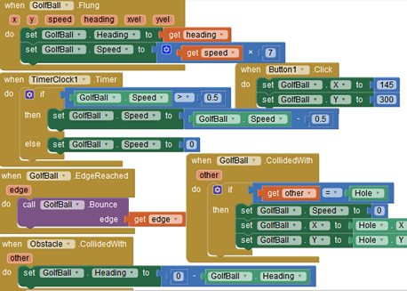

Drawing and Animation
Canvas - Draw Circle
Desenhar círculo, linhas livres...
CKT1 - já é o suficiente para criar um círculo na tela.
CKT2
- desenha um círcula na tela pelo simples toque do nosso dedo. Se dermos vários toques na tela fazemos pontilhados pela tela.
CKT3 - encostamos o dedo e arrastamos fazendo linhas livres.
O botão limpa a tela.
Na Canvas pode-se pôr uma imagem de fundo via propriedade BackgroundImage.

Draw Something - identico mas com accelerometerSensor
https://youtu.be/tJ-E1oGMZfA
Desenha linha(s) reta num gráfico. Ckt interessantíssimo.
https://youtu.be/fMNqme-LSwE
Sinuswave
radius: referente a espessura do traço (círculo ou ponto).
to (for each) refere ao que é preenchido na tela.
https://youtu.be/u7bG9v6DJr8
Sinuswave (Movendo) https://youtu.be/9U0qO9htaKA
Escrevendo e lendo de DB.
https://www.youtube.com/watch?v=PfkAq3ofdqs
Criar e aramazenar arquivos de testo no seu telefone
https://www.youtube.com/watch?v=YbIwITeex5s
Canvas - Outros
Swipe (de canvas)
https://youtu.be/TmJiEqIke_Q
Circle & Text in Canvas - Clock (2/3) -
https://youtu.be/ksmiRij0E5M
Coordinate System (Touched)
https://youtu.be/MrweyPm_6SY
Giro de Cubo
https://youtu.be/DobB4hXCOgo
How do you draw a circle at 10,10
https://youtu.be/iErm4clnXOg
Save and share
https://sites.google.com/site/stevozip/home/AI2/saveandshare
Quadrado - ft:
https://groups.google.com/forum/#!topic/mitappinventortest/997Sf8QQiiI
https://lh3.googleusercontent.com/-VqZxAs5rU4U/WHPhHUeWEmI/AAAAAAAAAEY/hYdXszO4cvY-6sFVaPL1sVdI-pF-XtwaACLcB/s1600/Bild1.png
ImageSprite
Aquário Peixinhos nadam pela tela.
Components canvas (Height e Width fill parent; backgroundimage: fish.ng); 2; imageSprite.
Media fish.png, mar.jpg.
Sequência de imagens em movimento Animação.
https://www.youtube.com/watch?v=fzeZAzVYk8s
Ball
Ball Bounce Components Ball (radius: 33)
Golf Canvas background: green, height 80%, width fill parent.
Components ball(name Hole), radius 15; ball (name GolfBall), paint color white, radius 10,
imageSprite: name obstacle, picyure obstacle,
button: tex: reset,

Touching Canvas with two fingers simultaneously
https://groups.google.com/forum/#!topic/programming-with-app-inventor/eHcKBQsWqVU
Game
Jogo da Velha
https://youtu.be/NSFLhnv2pQI
Pong
Canvas Height 80%; width fill parent
Components Ball: Heading 45, cor red, radius 15, , speed 15, Enabled check off imageSprit obstaculo.png
Media img obstaculo (carregue no imgeSprite), width 160px;
Snap-to-grid using remainder
https://youtu.be/ZH56__XBQfs
Apps
Apps de áudio, vídeo, metrônomo...
ActivityStarter
Permite inciar por exemplo atividades como câmera, inicializar...
https://youtu.be/qXAbnb2E1hg
Play media files from SD card Note que VideoPlayer1 também possui um recurso de FullScreen
https://www.youtube.com/watch?v=XBOUSL3Hqsg
Agenda a_agenda_tel_num
https://www.youtube.com/watch?v=lD0wi-c6M4I&t=54s
https://www.youtube.com/watch?v=lD0wi-c6M4I&t=9s